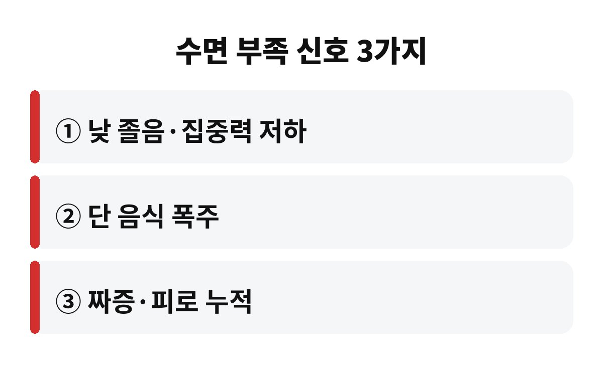
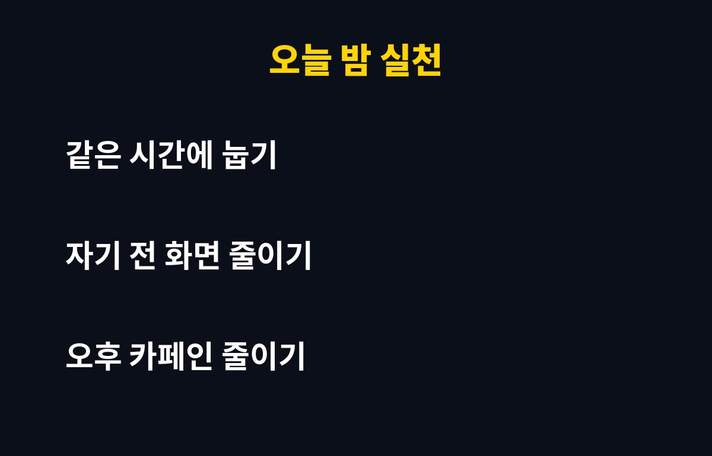

수면 부족 증상은 낮 졸음과 집중력 저하, 단 음식 당김, 잦은 짜증 3가지가 대표적이에요. 매일 6시간쯤 자고 버티는 직장인이라면 이게 왜 살과도 연결되는지 궁금하지 않으세요?
잠을 줄이면 시간을 번 것 같지만, 몸은 다른 곳에서 그 값을 받아 가요. 지금부터 그 이유를 쉽게 풀어 볼게요.
가장 흔한 신호는 낮에 쏟아지는 졸음이에요. 점심 먹고 졸리는 건 누구나 그렇다고요? 맞아요. 그런데 오전부터 눈꺼풀이 무겁고, 회의 중에 멍해지고, 같은 문장을 여러 번 읽게 된다면 이야기가 달라져요.
두 번째는 집중력과 기억력이 흐려지는 거예요. 작은 실수가 늘고 말이 바로 안 떠오르기도 해요. 세 번째는 감정 기복이에요. 평소엔 웃고 넘길 일에 괜히 짜증이 나면 잠 빚이 쌓였다는 신호일 수 있어요. 물론 이런 증상은 다른 원인으로도 생기니 단정은 금물이에요.
잠이 부족하면 식욕과 관련된 호르몬 균형이 흐트러진다고 알려져 있어요. 배고픔을 느끼게 하는 신호는 커지고, 배부름을 알려 주는 신호는 약해지는 쪽으로요. 그래서 평소보다 야식이나 단 음식이 더 당기는 거죠.
게다가 피곤하면 운동할 힘도 없고, 기운을 내려고 커피와 간식에 손이 가요. 결국 먹는 건 늘고 움직임은 줄어드는 악순환이 만들어져요. 오히려 다이어트 중인데도 잠을 줄이는 분들이 있는데, 이 부분은 꼭 기억해 두세요.
| 수면 부족 신호 | 몸에서 벌어지는 일 |
| 낮 졸음 | 집중력·판단력 저하 |
| 단 음식 당김 | 식욕 조절 균형 흐트러짐 |
| 짜증·피로 | 감정 조절 어려움 |

성인은 보통 7시간 안팎이 권장된다고 알려져 있어요. 다만 사람마다 필요한 시간이 조금씩 달라서, 주말에 몰아 자야만 개운하다면 평일 수면이 모자랄 가능성이 커요. 알람 없이도 자연스럽게 눈이 떠지는지 한번 확인해 보세요.
주말에 몰아서 자는 걸로 평일 부족분이 완전히 채워지진 않는다는 이야기도 있어요. 그러니 큰 한 방보다 매일의 작은 습관이 훨씬 중요합니다.
가장 쉬운 건 같은 시간에 눕고 일어나는 거예요. 주말에도 평일과 한두 시간 이상 차이 나지 않게 맞춰 보세요. 자기 전 한 시간은 스마트폰 화면을 줄이고, 방을 어둡고 조금 시원하게 해 주면 도움이 돼요.
카페인은 오후 늦게 마시면 밤잠에 영향을 줄 수 있어요. 오후 커피 한 잔을 줄이는 것만으로 달라지는 분도 많아요. 늦은 시간의 과식과 술도 잠을 얕게 만들 수 있으니 조심하세요.

그래도 몇 주째 계속 졸리고, 코골이가 심하거나 자다가 숨이 멎는 것 같다는 말을 들었다면 다른 원인이 있을 수 있어요. 이럴 땐 참지 말고 병원에서 상담받아 보시길 권해요.
수면이 오래 부족하면 면역력이 떨어져 감기에 자주 걸린다는 이야기가 많아요. 혈압과 혈당 관리에도 불리하게 작용할 수 있다고 알려져 있어요. 당장은 괜찮아 보여도 몇 달, 몇 년 쌓이면 몸이 보내는 신호가 커질 수 있다는 뜻이에요.
또 졸린 상태로 운전하거나 중요한 일을 처리하면 사고 위험도 높아져요. 술에 취한 것과 비슷한 수준으로 반응 속도가 느려진다는 설명도 있어요. 그래서 수면은 단순한 휴식이 아니라 일의 효율과 안전을 지키는 투자예요.
마지막으로 간단한 점검 하나만 해 볼까요? 최근 일주일 동안 평균 몇 시간 잤는지 메모해 보세요. 숫자로 보면 내 잠이 얼마나 모자란지 훨씬 선명하게 보여요. 생각보다 적어서 놀라는 분이 꽤 많답니다.
참고로 수면 시간만큼 질도 중요해요. 오래 누워 있어도 자주 깨거나 얕게 자면 개운하지 않거든요. 자기 전 격한 운동과 밝은 조명은 피하고, 낮에 햇볕을 쬐며 몸을 움직이면 밤잠이 한결 편해지는 경우가 많아요. 작은 습관을 일주일만 꾸준히 해 보면 아침 컨디션이 확실히 달라지는 걸 느끼실 거예요. 완벽하게 하려고 하기보다 하나씩 바꿔 보는 게 오래가는 비결이에요.
또 침대는 잠자는 용도로만 쓰는 것이 좋아요. 누워서 영상을 보거나 일을 하면 뇌가 침대를 활동하는 곳으로 기억해서 잠들기 어려워질 수 있어요. 잠이 안 오는데 오래 뒤척이고 있다면 잠깐 일어나 조용한 음악을 들으며 쉬다가 졸릴 때 다시 눕는 방법도 있어요.
오늘 밤은 평소보다 30분만 일찍 불을 꺼 보는 건 어때요? 도움이 되셨다면 구독해 두고 다음 건강 이야기도 받아 보세요.
※ 일반적인 건강 정보이며 진단·치료를 대신하지 않습니다. 증상이 계속되면 반드시 전문의 상담을 받으세요.